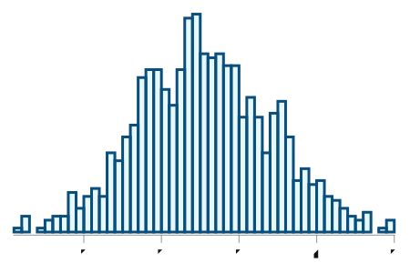
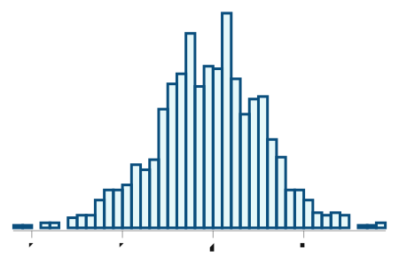

Raw residuals

Standardized residuals

Forecasting |r_t|, the absolute log-return of the S&P 500, from lagged Mealy statistics. All predictors are known before day t.
| Model | α | β | R² | residual mean | residual std | residual autocorr | squared residual autocorr |
|---|---|---|---|---|---|---|---|
| |r_t| ~ std_{t-1} | 0.0050 | 2.2617 | 0.1042 | 0.0000 | 0.0081 | 0.0126 | 0.0821 |
| |r_t| ~ avg_std_{t-1} | 0.0050 | 2.2829 | 0.1052 | -0.0000 | 0.0081 | 0.0121 | 0.0818 |
| |r_t| ~ |r_{t-1}| | 0.0055 | 0.2694 | 0.0726 | -0.0000 | 0.0083 | -0.0731 | 0.0769 |
| |r_t| ~ garch_std_{t-1} | -0.0020 | 0.9064 | 0.2204 | 0.0000 | 0.0076 | -0.0448 | 0.0732 |
Calibrating a baseline lagged absolute return against moving-average-difference kernels at weekly (0.8), monthly (0.95) and yearly (0.996) horizons. All predictors are lagged by one day.
| feature | beta |
|---|---|
| α | 0.0008 |
| |r_{t-1}| | 0.8961 |
| weekly | -0.7606 |
| monthly | -0.1593 |
| yearly | -0.0742 |
| metric | value |
|---|---|
| R² | 0.2246 |
| residual mean | 0.0000 |
| residual std | 0.0076 |
| residual autocorr (lag 1) | 0.0008 |
| squared residual autocorr (lag 1) | 0.0752 |

Signal: r_{t-1}. Returns are split into quantile buckets; the bar shows the mean next-day return for each bucket. Extreme buckets isolate the tails, so a genuine sign signal would show low buckets negative and high buckets positive.

| bucket | mean next-day return | std | count |
|---|---|---|---|
| 0 | 0.0008 | 0.0195 | 1002.0 |
| 1 | 0.0005 | 0.0104 | 3196.0 |
| 2 | 0.0003 | 0.0094 | 1120.0 |
| 3 | -0.0000 | 0.0094 | 1148.0 |
| 4 | 0.0003 | 0.0093 | 3214.0 |
| 5 | 0.0001 | 0.0134 | 1029.0 |
Each series is split into three tertile digits ([0.33, 0.67]). The joint 3×3 table gives Shannon entropies and normalised mutual information. NMI = 0 means independence; NMI = 1 means a deterministic relationship.
| pair | H(X) | H(Y) | H(X,Y) | MI | NMI |
|---|---|---|---|---|---|
| r_t vs r_{t-1} | 1.5842 | 1.5843 | 3.1623 | 0.0061 | 0.0039 |
| |r_t| vs |r_{t-1}| | 1.5839 | 1.5839 | 3.1616 | 0.0062 | 0.0039 |
| r_t vs std_{t-1} | 1.5842 | 1.5844 | 3.1603 | 0.0083 | 0.0052 |
| |r_t| vs std_{t-1} | 1.5839 | 1.5844 | 3.1521 | 0.0162 | 0.0102 |
| |r_t| vs avg_std_{t-1} | 1.5839 | 1.5826 | 3.1501 | 0.0164 | 0.0104 |
| |r_t| vs garch_std_{t-1} | 1.5839 | 1.5411 | 3.0742 | 0.0508 | 0.0330 |
The previous-day return is mapped to a [0,1] position size: the most negative bucket is 100% long, the most positive bucket is 0% long. Strategy return = weight × next-day return. Annualised figures assume 250 trading days per year.

| metric | total | annualised |
|---|---|---|
| signal strategy final return | 2.4144 | 0.0516 |
| buy & hold final return | 3.8039 | 0.0812 |
| average position size | 0.4979 | - |
| average absolute weight change per day | 0.3655 | - |
| strategy scaled to 100% average exposure | 4.8490 | 0.1035 |
We simulate 1000 paths from the bucket residual model: each day's return is bootstrapped from the empirical returns in the bucket determined by the previous day's return. The same bucket weights are applied, so the histograms below show the distribution of final log-returns we might expect from the model. Red dots mark the actual historical outcome.


| metric | actual | actual ann. | simulated mean | sim. mean ann. | simulated std | sim. std ann. |
|---|---|---|---|---|---|---|
| signal strategy final return | 2.4144 | 0.0516 | 2.6766 | 0.0571 | 0.8026 | 0.1173 |
| buy & hold final return | 3.8039 | 0.0812 | 3.9249 | 0.0838 | 1.1911 | 0.1740 |
| fraction of paths where strategy beats buy-hold | - | - | 0.0390 | - | - | - |
Autocorrelations show that raw returns are close to white noise, while |r| and the Mealy std are highly persistent. The Dickey-Fuller regression on |r| rejects a unit root (beta is negative) but the process has long memory. The two-day magnitude forecast loses almost none of its explanatory power, so the std signal decays very slowly.
| lag | acf(returns) | acf(|r|) | acf(std 0.01) |
|---|---|---|---|
| 1 | -0.0526 | 0.2568 | 0.5156 |
| 2 | -0.0118 | 0.3089 | 0.3445 |
| 3 | -0.0099 | 0.2810 | 0.3368 |
| 5 | -0.0015 | 0.2976 | 0.3441 |
| 10 | 0.0016 | 0.2373 | 0.2863 |
| 20 | 0.0100 | 0.1876 | 0.2227 |
| test | value |
|---|---|
| Dickey-Fuller beta on |r| | -0.7345 |
| Dickey-Fuller R² on |r| | 0.3672 |
| |r_t| ~ std_{t-1} R² | 0.1042 |
| |r_t| ~ std_{t-2} R² | 0.1020 |
The best one-step magnitude forecast is now the multi-feature model, which explains about 0.2246 of the variance of
|r_t|. It combines a baseline lagged absolute return (|r_{t-1}|) with moving-average-difference kernels at weekly, monthly and yearly horizons. The GARCH(1,1) conditional standard deviation is close behind. Daily return magnitude is only weakly predictable, which is what we expect for liquid markets.Once the lagged absolute return is included, the residual autocorrelation drops to near zero for the multi-feature model. The simple one-lag predictors leave small but positive residual autocorrelation, showing that volatility clustering is partly a short-memory effect. The histograms below show the raw and standardized residuals from the Mealy-std model.